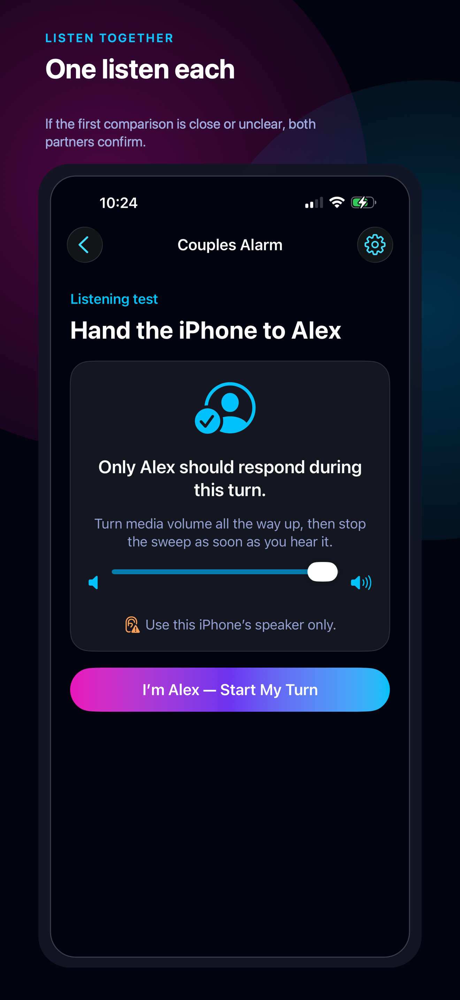

Why two people hear the same alarm differently
People can differ in which pitches they hear. The National Institute on Deafness and Other Communication Disorders explains that hearing can change with age, noise exposure and other factors. A two-person listening check can compare your responses to a tone; it cannot diagnose why you hear it differently or predict who will wake from sleep.
What research says about which sounds wake people
A study of 38 adults with mild to moderately severe hearing loss compared emergency alarm signals during sleep. A 520 Hz square-wave signal at 75 dBA woke 92% of participants, versus 56% for the high-pitched signal at that level. This was a smoke-alarm study, not a test of Couples Alarm or of keeping a partner asleep. Its sound levels are not a recommended phone-testing volume.
How to test alarm tones with your partner
- Set the phone where it will sit overnight, at the volume you’ll actually use.
- While you’re both awake, play candidate tones and each say what you hear.
- Shortlist tones the person waking hears clearly and the other barely notices.
- Try the best one on a real, noncritical morning with a backup alarm set.
Keep volumes moderate during testing.
How Couples Alarm’s tone test works
Couples Alarm turns that test into a guided flow. It only suggests a bundled tone when the person waking first can hear a tested tone the other partner does not.
- Choose who needs to wake first for this schedule.
- Each partner completes one guided listening turn.
- If the first comparison is close or unclear, both complete one confirmation turn.
- Preview the suggested tone together and run the real bedside alarm check.
- Both partners confirm before scheduling anything.


Making sure it actually rings: AlarmKit and Silent Mode
Couples Alarm schedules its alarms with Apple’s AlarmKit, so they ring even when the iPhone is silenced. If the requested schedule has no suitable bundled tone, the app says so—keep using an alarm you trust for that schedule.
Partner responses and alarms stay on the iPhone. No account or backend is required. Requires iOS 26 or later. Setup and the real fit check are free; completing setup starts one calendar month of full access, followed by a $9.99 one-time purchase for continued full access—not a subscription.
When a tone won’t be enough
If your partner is a very light sleeper or the test finds no suitable tone, a sound-free route is better: a watch or band haptic alarm, or vibrate-only. Unlike those, Couples Alarm keeps a real sound and needs no wearable—when it fits. Compare options: how to wake up without waking your partner and alarm apps for couples compared.
- Nothing here is a hearing assessment, sleep treatment, or relationship advice.
- No phone, watch, band, or app setup guarantees that one person will wake or the other will stay asleep.
- Keep a trusted backup alarm for important mornings until you have tested the exact setup where you sleep.
Frequently asked questions
Can an alarm wake one person and not the other?
Sometimes. An awake listening check can find a tone you hear differently, but it does not prove who will wake from sleep. Try the exact setup on a noncritical morning with a backup alarm.
Why does my partner sleep through the alarm?
An alarm response alone cannot tell you why someone did not wake. Hearing, sleep and the alarm setup can all differ. If you have concerns about hearing, speak with a qualified health professional.
What alarm sound is hardest to sleep through?
There is no universal best sound. In a smoke-alarm study of adults with hearing loss, a 520 Hz signal woke more participants than the high-pitched signal. That result does not establish a best everyday phone alarm.
Will Couples Alarm ring if my iPhone is on silent?
Yes. It uses Apple’s AlarmKit, so alarms ring even when the iPhone is silenced.
How should we approach the listening test?
Follow the app’s guided setup, stop if a sound is uncomfortable, and do not treat the result as a hearing assessment.
Original and official references